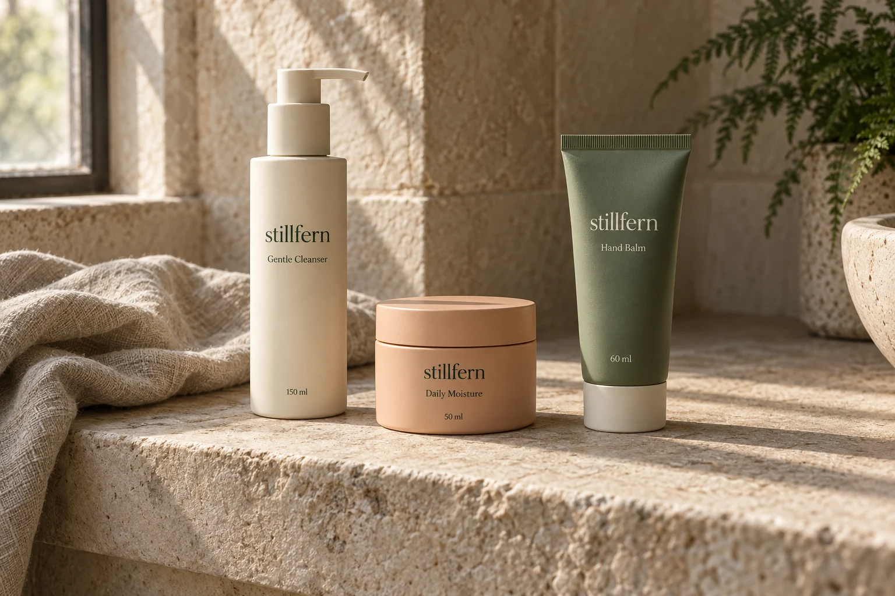

An independent Bath brand
Less to navigate.
More to understand.
Stillfern is a ten-person cosmetic brand built around three everyday products. We keep the range short so the useful details have room.

Small means specific.
Our work is divided between product development, packaging, customer information and getting a small range ready for independent retailers. The same three products anchor our direct catalogue and wholesale offer.
We serve the UK. We do not run a subscription programme or release limited collections that ask you to keep up.
Care without a script.
Some people want a cleanser and a face cream; others only want a hand balm on the desk. We show both choices with the same care. A complete collection is not a requirement to buy a complete routine.
We describe the format, amount, feel and use. We leave transformation promises, medical advice and artificial urgency out of the conversation.
For a well-edited shelf.
Our imagined wholesale partners are small lifestyle shops with space to explain a compact range. Retail enquiries begin with the three-product catalogue, available shelf space and the practicalities of a UK delivery.
See the retailer enquiry outlineA fictional enterprise.
Stillfern Skin is an original concept commission in the Fieldwork Digital Showcase. The company, catalogue, prices and pack photography are fictional. It is not an actual client engagement or an operating cosmetic business.
The demonstration bag uses this browser tab's session storage, with an explicit fallback when storage is unavailable. It does not connect to payment, stock, fulfilment, accounts or email. No personal details or health information are requested.